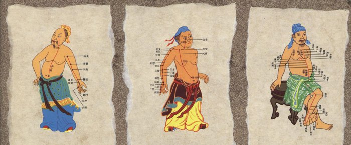
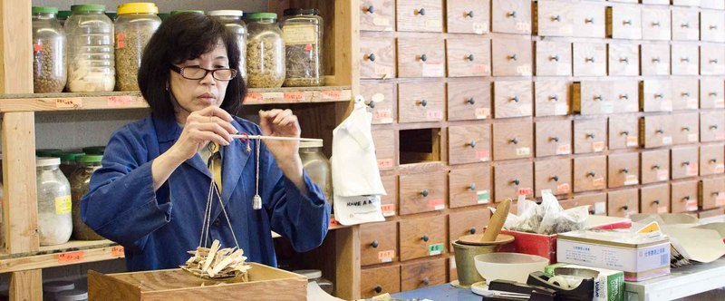
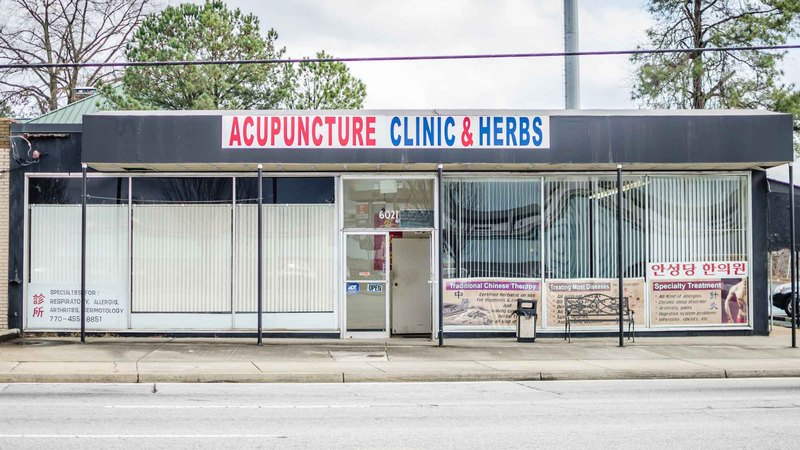
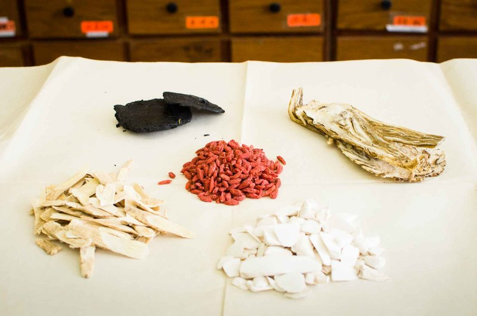
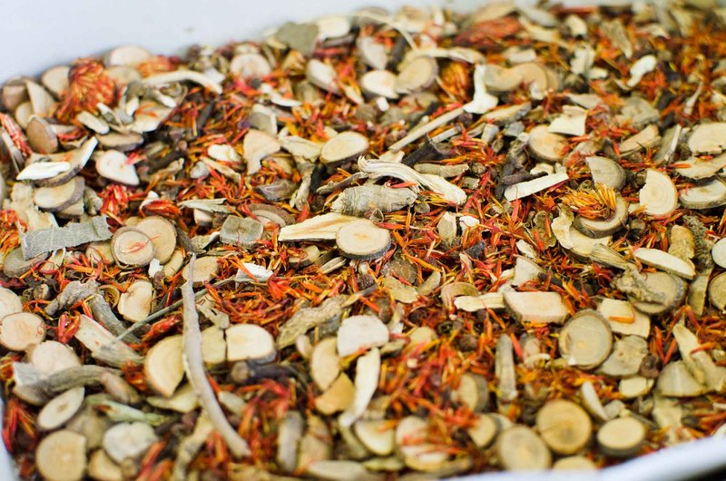
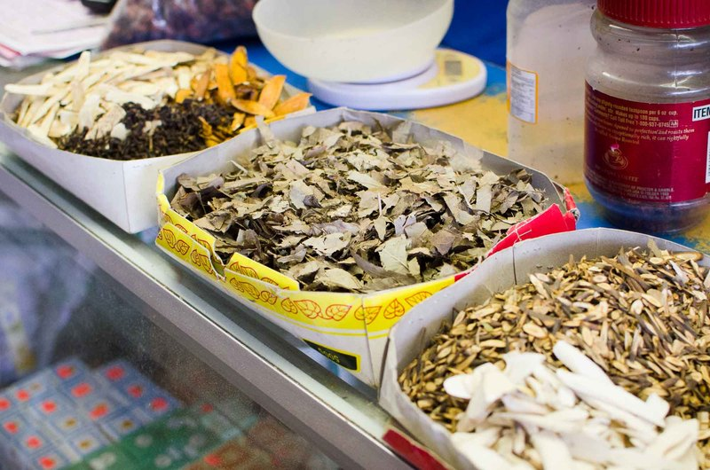
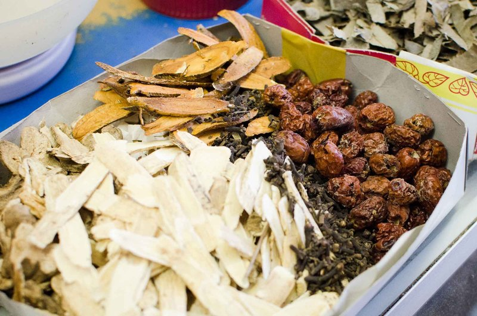
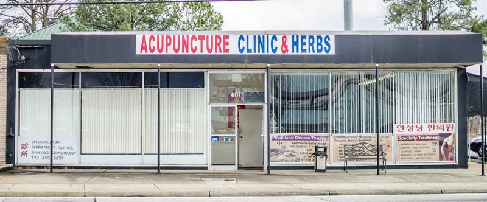

01
Acupuncture
Stimulating precise points along the body’s meridians helps restore proper energy flow — the way electricity must flow without short circuits.
Dr. George Fan Xu, L.Ac., OMD, treats chronic and acute conditions with acupuncture and individualized Chinese herbal prescriptions — addressing the root cause, not just the symptoms.


Location
6021 New Peachtree Rd., Doraville, GA 30340
Across from the Doraville MARTA Station
Hours
10:00 AM – 6:30 PM
Saturday – Thursday · Closed Tuesday & Friday
Injury and illness are marked by disruptions in the body’s energy flow. Correcting them with acupuncture and herbs enables the body to heal itself.

Stimulating precise points along the body’s meridians helps restore proper energy flow — the way electricity must flow without short circuits.

Herbs chosen for their effect on Chi are precisely combined into bags, then brewed at home into a medicinal tea.
Each course of care begins with a consultation — reading the pulse, tongue, eyes and nails — followed by an individualized prescription.
Born in Guangzhou, Dr. George Fan Xu comes from three generations of Traditional Chinese Medicine practitioners. He began learning in his father’s clinic at 14, then studied for five years at Guangzhou’s Traditional Chinese Medical College under some of the finest specialists in China.
Patients often come to him with chronic problems that have gone unresolved for years. His aim is to treat the whole person and re-establish balance.



Chinese herbs are chosen for their effect on the flow of Chi. Traditional Chinese Medicine rarely offers instant relief — it works on the root cause of the illness.
Consultation. Traditional diagnosis leads to an individualized prescription.
Your herbs. A precise combination of specific herbs is mixed together into bags.
Brew & drink. Each bag is boiled down into several cups of “tea,” taken the prescribed number of times per day.
Follow-up. Dr. Xu follows up office visits with phone calls to check on your progress.
“Most brews do not taste bad, but they rarely taste good either. Hold your breath and drink it down fast.”
The barefoot doctor will go barefoot before he will charge more than his patients can afford.The barefoot doctor tradition
Dr. Xu puts the patient before money. He takes the time to educate patients about their condition and treatment — and considers it a success when a patient no longer needs him.

6021 New Peachtree Rd., Doraville, GA 30340
Across from the Doraville MARTA Station| Monday | 10:00 AM – 6:30 PM |
|---|---|
| Tuesday | Closed |
| Wednesday | 10:00 AM – 6:30 PM |
| Thursday | 10:00 AM – 6:30 PM |
| Friday | Closed |
| Saturday | 10:00 AM – 6:30 PM |
| Sunday | 10:00 AM – 6:30 PM |